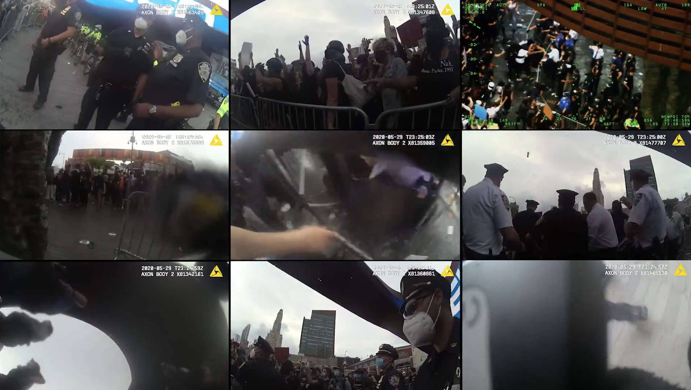

Installation view, Visual Investigations, Architrkturmuseum Der TUM, Munich, 2024
About the Work
Under the Arch transforms the surveillance apparatus of state power into a tool for public accountability. The work refuses editorial authority—no footage has been cut or rearranged. Viewers encounter multiple simultaneous perspectives unfolding in real-time across nine synchronized monitors.
The installation inverts conventional documentary practice. Rather than imposing narrative structure on events, it distributes institutional documentation across physical space, allowing the evidence to speak for itself. The footage was obtained through collaboration with the National Lawyers Guild on civil rights litigation that resulted in settlements for protesters.
Visitors must navigate the installation physically, constructing their own spatial understanding of events—much as participants experienced the chaos itself. The nine-monitor format functions as embodied mapping: viewers experience the limitations of any single perspective while glimpsing the larger pattern of institutional behavior.
Full Installation Video
View the complete 30-minute installation as a single synchronized composition.
Context
By May 29, 2020, just four days after George Floyd's death in Minneapolis, protests had spread across the United States. In New York, thousands converged at the Barclays Center in Brooklyn—the first large-scale gathering of what would become a week of protest and unrest.
The NYPD's actions that week strained relationships with New Yorkers and cost the city millions in lawsuits and settlements that continue today.
Legal Impact
The footage was obtained through legal discovery in collaboration with the National Lawyers Guild's class-action lawsuit on behalf of protesters. The case resulted in successful settlements in 2023.
Documentation:
Technical Specifications
Format: 9-channel synchronized video with audio
Duration: 30:00 (loops continuously)
Configuration: 3×3 grid (nine monitors) or single channel projection
Space required: Approximately 20' × 15'
Source: NYPD body camera and aerial surveillance footage
Exhibition Materials
Download complete documentation for exhibition planning
{kind=link}
About
Jon Nealon is an Emmy-nominated investigative journalist and documentary filmmaker. His work includes "Crime Scene Bucha" for FRONTLINE/PBS and collaborations with SITU Research, Human Rights Watch, and the Associated Press.
Exhibition Inquiries
Under the Arch is available for exhibition at museums, galleries, and educational institutions.
Contact: jnealon@gmail.com